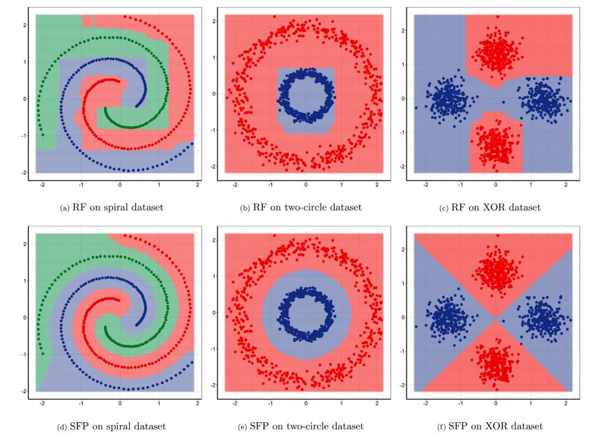
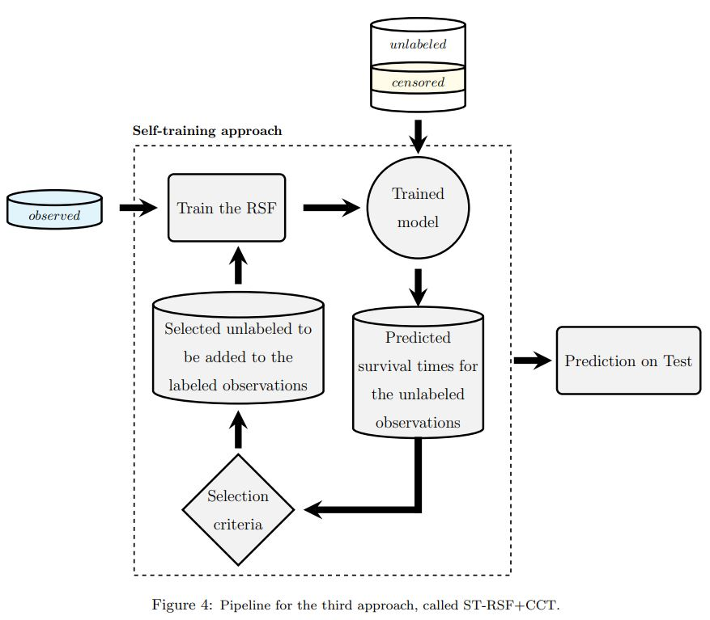
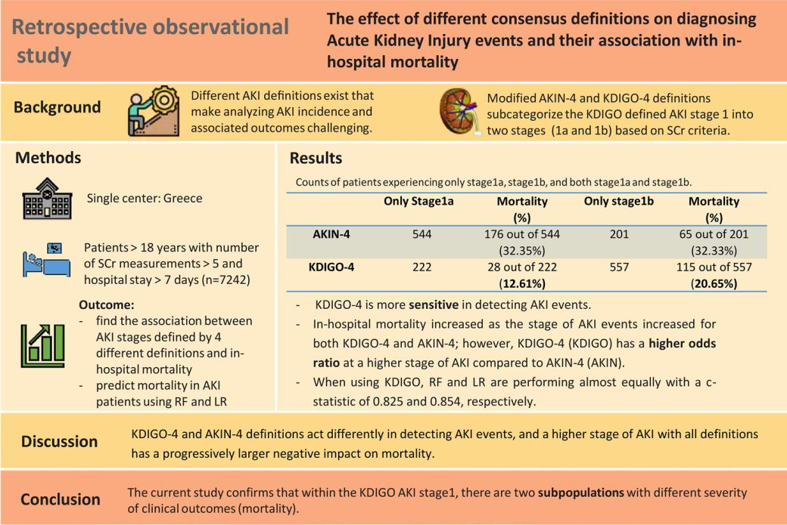
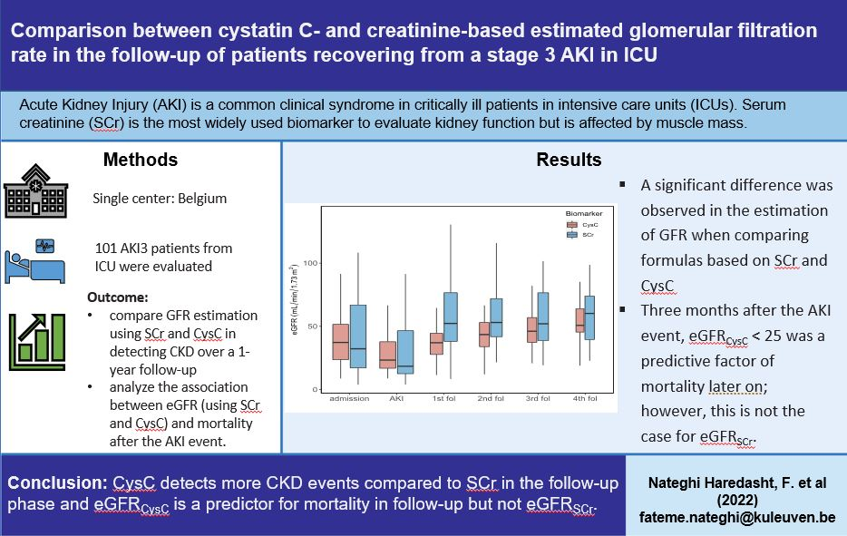

My research background
My PhD research:
Throughout my PhD program, I have been involved in the development of machine learning models
and applications in the healthcare domain. I work on semi-supervised learning models and try to
adapt them to the survival analysis domain. My PhD thesis topic is "Development of predictive
models for critically ill patients with acute kidney injury". More specifically, my PhD project
objective can be divided into methodological objectives, which contribute to machine learning,
and medical application objectives, which result in improved post-ICU policies for patients with
AKI. A risk profile was developed for each survivor of AKI using EHR data upon discharge from
the ICU, which allowed us to create a customized follow-up plan.
The following is a selection of my recently published or soon-to-be published research papers. Check
out my Google
Scholar for the
list of all publications.

This paper thus presents a generative model extending the centroid-based clustering approach to
be applicable to classification and regression tasks. Given an arbitrary loss function, the
proposed approach termed Supervised Fuzzy Partitioning (SFP) incorporates label information into
its objective function through a surrogate term penalizing the empirical risk. Entropy-based
regularization is also employed to fuzzify the partition and to weight features, enabling the
method to capture more complex patterns, identify significant features, and yield better
performance facing high-dimensional data.

Many clinical studies require the follow-up of patients over time. This is challenging: apart
from frequently observed drop-out, there are often also organizational and financial challenges,
which can lead to reduced data collection and, in turn, can complicate subsequent analyses. In
contrast, there is often plenty of baseline data available of patients with similar
characteristics and background information, e.g. from patients that did not consent to be
followed over time or from patients that fall outside the study time window. In this article, we
investigate whether we can benefit from the inclusion of such unlabeled data instances to
predict accurate survival times. We also show that integrating the partial supervision provided
by censored data in a semi-supervised wrapper approach generally provides the best results,
often achieving high improvements, compared to not using unlabeled data.

Due to the existence of different AKI definitions, analyzing AKI incidence and associated
outcomes is challenging. We investigated the incidence of AKI events defined by 4 different
definitions (standard AKIN and KDIGO, and modified AKIN-4 and KDIGO-4) and its association with
in-hospital mortality.

Serum creatinine (SCr), the most widely used biomarker to evaluate kidney function, does not
always accurately predict the glomerular filtration rate (GFR) since it is affected by some
non-GFR determinants such as muscle mass and recent meat ingestion. Researchers and clinicians
have gained interest in cystatin C (CysC), another biomarker of kidney function. The study
objective was to compare GFR estimation using SCr and CysC in detecting CKD over a 1-year
follow-up after an AKI-stage 3 event in the ICU, as well as to analyze the association between
eGFR (using SCr and CysC) and mortality after the AKI event.